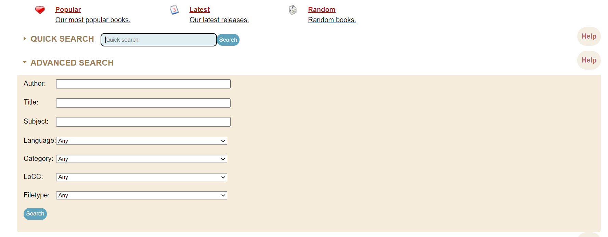
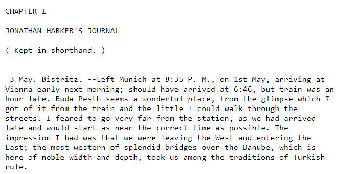
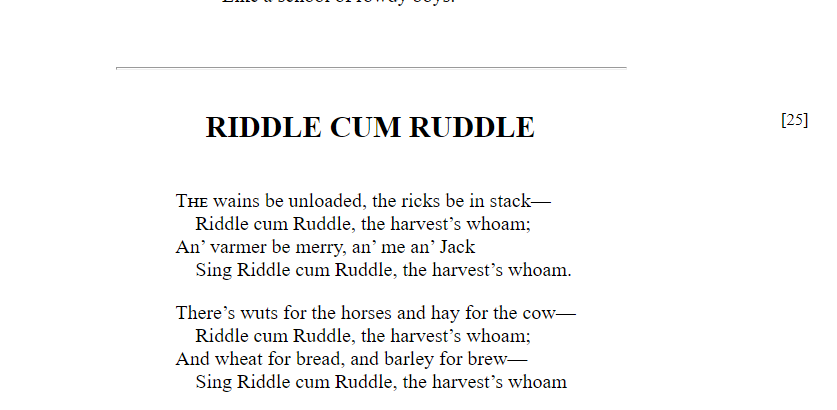

Текстобзор: Project Gutenberg
13.03.2022
Описание
Project Gutenberg основан Майклом Хартом в 1971 году. Это один из старейших (если не самый старый) проектов по оцифровке литературы который ещё продолжает работать. Идея Майкла была в том что в компьютеры могут быть полезны не только для вычислений, а ещё для хранение и поиска литературы.[1] Он сразу начал оцифровывать книги в виде вычитанного текста, а не в виде сканов. Декларируемая цель проекта: поощрять создание и распространение электронных книг. [2]
Скорость добавления книг росла со временем[3][4], суммарное количество добавленных книг по годам:
- 1971 — первая книга
- 1989 — 10 книг
- 1994 — 100 книг
- 1997 — 1000 книг
- 2002 — 5000 книг
- 2003 — 10000 книг
- 2005 — 15000 книг
- 2006 — 20000 книг
- 2008 — 25000 книг
- сейчас более 60000 книг
Число волонтеров участвовавших и участвующих в проекте трудно подсчитать: речь идет о десятках тысяч людей.[5]
Проект Гутенберг раньше хранил кроме книг музыку, аудиокниги, как сгенерированные автоматически так и записанные и другие типы контента. Но сейчас сфокусировался на электронных книгах, а другие типы контента перешли на отдельные сайты. Ограничений по тематике литературы или языкам нет, наоборот цель собрать как можно больше литературы для как можно большего количества читателей.[6]
Основное ограничение для книг — они должны быть в общественном достоянии по законодательству США:
Project Gutenberg accepts only donations of eBooks (i.e., written works) that are not currently protected by copyright in the United States. Such works are in the public domain. New Project Gutenberg eBooks are typically digitized versions of books that were published long ago and for which any US copyright has expired.[7]
У проекта есть несколько ответвлений: Project Gutenberg-DE, Project Gutenberg of Australia, Project Runeberg и др. Все они являются отдельными организациями, но им разрешено использовать название основного проекта. Проекты концентрируются на отдельных видах лигатуры, например, национальной и могут соблюдать копирайт другой страны.[8]
Организация
Проект Гутенберг минимально ограничивает участников. Каждый вносит свой вклад в той мере и форме как он хочет. Главное, чтобы вклад соответствовал целям проекта и удовлетворял минимуму ограничений, вроде ограничений связанных с копирайтом. [9] Структура управления существует, но она минимальна.[10]
Для обеспечения административной составляющей проекта в 2000 году был создан фонд «Project Gutenberg Literary Archive Foundation». [11] Фонд в том числе принимает пожертвования, но основная часть работы: администрирование сайта и наполнение его контентом, построена на вкладе волонтеров.[12]
Основной формат
Основным форматом хранения книг служит простой текстовый файл.[13] Другие форматы, из основного текстового формата генерируются автоматически[14], в том числе на других сайтах[15].
Оцифрованная книга не обязательно должна повторять все внешние детали бумажной книги, цель трансформировать книгу в современный цифровой формат. Концентрация идет на содержании и структуре книги, вместо визуального представления. Такой подход принят, так как оцифровка рассчитана на долгосрочную перспективу, а средства отображения меняются относительно быстро. Некоторые детали, вроде разметки номеров страниц, остаются на усмотрение оцифровщика.[16]
Для хранения целенаправленно был выбран самый технологически простой и распространенный формат.
This philosophical premise has created several offshoots: Electronic Texts (Etexts) created by Project Gutenberg are to be made available in the simplest, easiest to use forms available.
Suggestions to make them less readily available are not to be treated lightly. Therefore, Project Gutenberg Etexts are made available in what has become known as “Plain Vanilla ASCII,” meaning the low set of the American Standard Code for Information Interchange: i.e., the same kind of character you read on a normal printed page — italics, underlines, and bolds have been capitalized.
The reason for this is that 99% of the hardware and software a person is likely to run into can read and search these files.
Any other system of etext storage is going to fall short of an audience of 99%.[17]
Такой подход позволит библиотеке пережить значительные изменения как в программном так и аппаратном обеспечении. Протокол TCP/IP появился позже первой оцифрованной книги, а первый браузер примерно через 20 лет после оцифровки первой книги.
The major point of all this is that years from now Project Gutenberg Etexts are still going to be viable, but program after program, and operating system after operating system are going to go the way of the dinosaur, as will all those pieces of hardware running them.
…
The value of Plain Vanilla ASCII is obvious … so is very much of the value of most of the various markup systems we have in the world. But until some real standards arrive — we would be limiting our options a great deal if we do not keep copies of all etexts in Plain Vanilla ASCII as well. We don’t have anything against markup. Not vice versa.
Alice in Wonderland, the Bible, Shakespeare, the Koran and many others will be with us as long as civilization … an operating system, a program, a markup system … will not.[18]
Plain Vanilla ASCII is the best format by far. It is "the lowest common denominator". It can be read, written, copied and printed by any simple text editor or word processor on any electronic device. It is the only format compatible with 99% of hardware and software. It can be used as it is or to create versions in many other formats. It will still be used while other formats will be obsolete (or are already obsolete, like formats of a few short-lived reading devices launched since 1999). It is the assurance collections will never be obsolete, and will survive future technological changes. The goal is to preserve the texts not only over decades but over centuries. There is no other standard as widely used as ASCII right now, even Unicode, a "universal" encoding system created in 1991. [19]
Точность текстов
Проект не ставит перед собой цели максимально точной передачи текста исходника, а скорее руководствуется разумным подходом — сделать текст достаточной точности для удобного чтения для большинства людей.
Also in the same vein, Project Gutenberg has avoided requests, demands, and pressures to create “authoritative editions.” We do not write for the reader who cares whether a certain phrase in Shakespeare has a “:” or a “;” between its clauses. We put our sights on a goal to release etexts that are 99.9% accurate in the eyes of the general reader. [20]
Критерием является понятность текста, вместо формальных критериев. Тексты делаются для обычных читателей, а не для научных целей.
This is not to say that the more academic elite will not be able to create some complex system of eBook format to preserve certain aspects of certain editions only elites of the academic world would actually recognize, but that for the person who has never read Shakespeare, that many of the arguments about the various editions simply don't apply in the face of getting a readable edition to them.
...
Another truth is that I simply refuse to get involved in such petite bourgeois argumentation as to which is best:
To be or not to be. To be, or not to be. To be; or not to be. To be: or not to be. To be-or not to be. To be--or not to be. To be - or not to be. To be -- or not to be.
or any similar arguments that have minimal bearing to an effort of a first time reader of Shakespeare. [21]
Конечно, это не отменяет цели передать авторский замысел без искажений, детальнее об этом указано в инструкциях Distributed Proofreaders, про который написано ниже.
Опечатки
Сообщения об опечатках принимаются по почте [22], для текста письма рекомендовано использовать специальный формат:
In Homer's "Odyssey," EBook #1728, I found the
following errors:
Telemachus, who bas now resided
bas ==> has
But I wouldask thee,
wouldask ==> would ask
and the elders gave place to him
him ==> him.
ye men of Ithaca, to the
will say.
line or words missing between "the" and "will"?
Загрузка книг
Прежде чем загружать книгу её необходимо проверить на копирайт на специальном разделе сайта.
Заявки на загрузку книг оформляются на другом разделе сайта. Для загрузки используются два основных формата: HTML (HTML5 не поддерживается) и Plain text в UTF8.
Заявки обрабатываются администраторами вручную, насколько процесс автоматизирован сказать трудно, судя по инструкции, до полной автоматизации ещё далеко.
Таким способом книги принимаются от всех желающих. Организованный способ вычитки книг проходит через портал Distributed Proofreaders, про который написано ниже.
Сайт и форматы книг
На сайте Проекта Гутенберг есть форма поиска книг:

Так же есть группировка книг по категориям. Категории, вероятно, сложились исторически в ходе развития проекта, точной информации про это не нашел.
На сайте есть возможность скачать каталог книг в различных форматах, подписаться на новости про новые книги по email и RSS. Есть описание для разработчиков про автоматизацию работы с сайтом и создание зеркал. Всё это облегчает и стимулирует новые проекты связанные с данными проекта.
Книги в основном представлены в форматах: mobi, HTML и Plain text.
Plain text
В тексте присутствует разметка относящаяся к облегченным языкам разметки (пример). Текст абзацев разбит на строки примерно одинакового размера, примерно, как в бумажных книгах:

HTML
В HTML версиях книг есть обложка и оглавление. Оглавление может быть привязано к станицам, а может просто к разделам произведения (Пример Одиссея Гомера и Farewell F. W. Harvey).
Номера страниц отображаются справа от текста, к ним же привязаны якоря из меню.

Distributed Proofreaders
Чарльз Фрэнкс основал Distributed Proofreaders (DP) в 2000 году для совместной вычитки книг. Раньше большинство книг вычитывали энтузиасты-одиночки, а сейчас гораздо больше книг производиться на через этот портал[23]. DP автоматизирует и распределяет работу связанную с вычиткой книг. Распределение работы заключается том, что над разными страницами одной книги одновременно могут работать разные люди, автоматизация в том, что значительная часть работы проходит на портале в веб-интерфейсе. Портал содержит большую базу знаний на движке MediaWiki по вычитке и работе DP а так же форум для общения. DP позволил очень сильно ускорить вычитку и размещение новых книг на проекте Гутенберг.
Frequently Asked Questions about Project Gutenberg
Each time a volunteer (proofreader) goes to the website, s/he chooses a book, any book. One page of the book appears in two forms side by side: the scanned image of one page and the text from that image (as produced by OCR software). The proofreader can easily compare both versions, note the differences and fix them. OCR is usually 99% accurate, which makes for about 10 corrections a page. The proofreader saves each page as it is completed and can then either stop work or do another. The books are proofread twice, and the second time only by experienced proofreaders. All the pages of the book are then formatted, combined and assembled by post-processors to make an eBook. The eBook is now ready to be posted with an index entry (title, subtitle, author, eBook number and character set) for the database. Indexers go on with the cataloging process (author's dates of birth and death, Library of Congress classification, etc.) after the release.[24]
Вычитка книги состоит из следующих этапов:
- Первая вычитка
- Вторая вычитка
- Третья вычитка
- Первый этап форматирования
- Второй этап форматирования
- Сборка книги
- Вычитка результатов (Smooth reading)

Для участия в каждого этапе вычитки нужно обладать определенным опытом работы в системе, например, чтобы участвовать во втором этапе вычитки, нужно вычитать 300 страниц в первом этапе[25]. Для того чтобы вообще начать вычитывать, необходимо выполнить несколько задач для ознакомления с процессом в специальном тренажере. Для более сложных этапов требований больше.
В основном вычитка проходит по стандартным инструкциям, хотя отдельные проекты могут иметь особые требования как к участникам, так и к процессу вычитки, например, к форматированию.
Вычитка проходит в двухпанельном редакторе. На одной панели находится скан страницы, на другой распознанный текст который нужно скорректировать. Единица вычитки — одна страница.

Для разметки использует текстовый язык разметки. Формат включает в себя элементы похожие на HTML и Markdown, вероятно, является продуктом исторического развития проекта.

Один из последних этапов Smooth reading — чтение книги не с целью вычитки, а обычное, содержательное чтение. Участники этого этапа сообщают о любых проблемах найденных в ходе такого чтения. [26]
Основные правила вычитки помещаются на двухстраничном документе, полное описание намного больше. Чтобы было проще знакомиться с правилами на портале присутствует интерактивный учебник-тренажер.
Заключение
Вероятно, Project Gutenberg в комбинации с Distributed Proofreaders самый развитый и эффективный текстологический проект из существующих на данный момент. При его изучении можно подчеркнуть ещё много полезного, что не включено в данную заметку.
Особо примечательно влияние автоматизации на скорость оцифровки книг. DP позволил привлечь к самому длительному этапу вычитки много людей тем самым производство книгу увеличилось на порядок.
Важная особенность концепции Project Gutenberg это ориентация на как можно более простой текстовый формат. Точно сказать нельзя, но кажется что это одна из причин его долговечности.
Недостатками, на первый взгляд, являются следующие моменты:
- Нет ориентации на переводы. Книгу можно оцифровать на разных языках, есть даже национальные версии порталов Project Gutenberg и Distributed Proofreaders, но книги полученные при вычитке — это просто книги на разных языках. Нет какой-либо связи между переводом и оригиналом.
- Так же в процессе переработки книги теряется связь между сканом и вычитанным текстом. Хотя, возможно, её получится восстановить по номерам страниц.
- В результирующей книге нет простого способа исправления печаток. По крайне мере, предложенный на сайте PG способ отправки по почте не очень удобен.
За исключением первого недостатка — отсутствие какого-то способа связывать переводы с оригиналом, остальные незначительны.
Ссылки
The History and Philosophy of Project Gutenberg, by Michael Hart ↩︎
How Project Gutenberg Does NOT Reflect Anyone's Personal Taste ↩︎
Project Gutenberg Principle of Minimal Regulation/ Administration, by Michael Hart and Greg Newby ↩︎
Project Gutenberg (1971-2008) by Marie Lebert
↩︎But a large scale conversion into other formats is handed over to other organizations. For example Blackmask Online, which uses Project Gutenberg's collections to offer thousands of free books in eight different formats based on the Open eBook (OeB) format. Or Manybooks.net, which converts Project Gutenberg's books into formats readable on PDAs.
The History and Philosophy of Project Gutenberg, by Michael Hart ↩︎
The History and Philosophy of Project Gutenberg, by Michael Hart ↩︎
The History and Philosophy of Project Gutenberg, by Michael Hart ↩︎
↩︎These books are chosen by our volunteers. Simply, a volunteer decides that a certain book should be in the library, obtains the book and does the work necessary to turn it into an eBook. Most of our new eBooks now come from Distributed Proofreaders. Historically, we had many “solo” eBook producers, but this is less frequently seen these days.